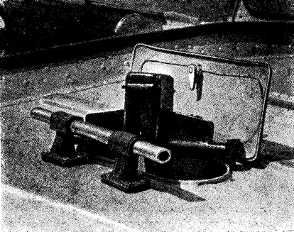

С этой дюралевой мотолодкой мы познакомились на VII Всесоюзных соревнованиях по водно-моторному спорту на приз «Катеров и яхт» под Каунасом прошлым летом и по достоинству оценили ее комфортабельность и мореходные качества. Правда, это была опытные образцы.

А сейчас уже изготовлены штампы, проводятся испытания по подбору оптимальных винтов и мощностей подвесных моторов для различных нагрузок; по результатам этих испытаний будут даны рекомендации в «Инструкции по эксплуатации лодки».
Кроме того, конструкторы завода намерены продолжить в навигацию 1974 г. ресурсные испытания «Сарепты» с моторами суммарной мощностью до 50 л. с. Можно надеяться, что первые серийные мотолодки появятся в течение 1974 г. в наших магазинах.
Основные данные

| Длина, м | 4,6 |
| Ширина, м | 1,6 |
| Высота борта, м | 0,75 |
| Вес полностью оборудованной лодки (без мотора), кг | 235 |
| Пассажировместимость, чел | 4—6 |
| Грузоподъемность, кг | 450 |
| Предельная мощность подвесного мотора, л. с. | 50 |
| Ориентировочная цена, руб | 900—1000 |
Своим названием «Сарепта» обязана старому поселку, на месте которого расположен ныне Волгоградский судостроительный завод. Здесь по инициативе молодых специалистов в течение 1971—1972 гг. разработан проект, а также построены и испытаны опытные образцы этой новой комфортабельной мотолодки.

По своим основным характеристикам она соответствует типу 6 (класс III) существующего «Типажа прогулочных судов». Этот тип, кстати, наименее освоен отечественной промышленностью.
В настоящее время закончена основная работа по подготовке производства к серийному выпуску мотолодок «Сарепта».
«Сарепта» предназначена для дальнего туризма и в то же время это элегантная прогулочная лодка. Кроме того, ее можно использовать как буксировщик воднолыжников, базу для аквалангистов, а также в качестве служебно-разъездного, спасательного или патрульного судна.

«Сарепта» принимает до 6 человек. С двумя «Вихрями» она успешно прошла в 1972 году ресурсные испытания по 300-часовой программе. Учитывая тенденцию к повышению мощностей отечественных лодочных моторов, во время навигации 1973 г. были проведены дополнительные испытания лодки под моторами суммарной мощностью до 50 л. с.
В чем основные отличия «Сарепты» от известных серийных мотолодок? Прежде всего это комбинированные обводы корпуса (тримаранные в носовой части и плоско-килеватые — в кормовой) и легкая сдвижная алюминиевая рубка. Эта лодка сочетает в себе преимущества плоско-килеватых и тримаранных обводов, обладая высокой скоростью на тихой воде и повышенной мореходностью в условиях волнения. Принятые обводы явились результатом тщательного анализа более 80 типов отечественных и зарубежных судов подобного типа и назначения.
Диаметр циркуляции лодки на полном ходу и с максимальной нагрузкой составляет 1,5—2 длины корпуса, и хотя у «Сарепты» в отличие от большинства тримаранов нет внешних скосов спонсонов, она устойчива на поворотах и имеет умеренный крен благодаря значительному развалу бортов (около 10°). Высокий борт и широкая палуба в носу препятствуют забрызгиванию и заливанию кокпита при любых курсовых углах хода лодки относительно волны. Тримаранные обводы в носу позволяют «Сарепте» мягко идти на волне высотой до 0,5 м не снижая скорости. Лодка обладает высокой устойчивостью на курсе и хорошей всхожестью на волну.

На расстоянии трети длины от транца «Сарепта» имеет плоско-килеватые обводы с углом килеватости 8,5° при ширине по скуле 1300 мм. Фланцы днища и борта образуют скуловой брызгоотбойник шириной 30 мм. Умеренная килеватость, относительно небольшая ширина глиссирующей пластины днища и наличие брызгоотбойников позволяют лодке при мощности мотора в 20 л. с. развивать скорость с одним человеком 38 км/час, с четырьмя — 28 км/час. На испытаниях «Сарепта» с двумя «Вихрями» по 20 л. с. показала скорость 44 км/час с одним водителем; с шестью пассажирами на борту скорость составила 35 км/час.
Обшивка изготавливается из развертывающихся на плоскость листов и не требует предварительной гибки или штамповки. Толщина обшивки днища — 2 мм, палубы и бортов — 1,5 мм. Большинство соединений корпуса сварные (точечная и аргоно-дуговая сварка) и лишь в труднодоступных местах применена клепка. Продольные гофры по бортам, палубе, крыше и стенкам рубки позволили отказаться от продольного набора в этих конструкциях.

Очень тщательно отрабатывалась прочность конструкции транца. С днищем он соединен тремя бракетами-кницами, замыкающимися на продольный набор, с бортами — стенками подмоторной ниши. Транцевая дубовая доска дополнительно крепится к бортам при помощи угольников. Благодаря такому конструктивному решению после 500-часовой эксплуатации опытных лодок в самых жестких условиях под двумя моторами «вихрь» никаких дефектов в транце и его соединениях не обнаружено.
Надежность и безопасность эксплуатации явились предметом особой заботы конструкторов «Сарепты».

Тримаранные обводы позволили добиться высокой статической остойчивости лодки (метацентрическая высота при любых вариантах нагрузки превышает 1 метр). Это позволяет свободно перемещаться по лодке как на ходу, так и на стоянке, взбираться на борт из воды по забортному трапу (который, кстати, входит в снабжение лодки), управлять лодкой стоя, не рискуя опрокинуть ее или зачерпнуть бортом воду. При испытаниях четыре человека усаживались вдоль одного борта и вода при этом не доходила до палубы на 20 см.
Непотопляемость лодки обеспечивается блоками пенопласта ПСБ-С, оклеенными миткалем; блоки размещены в подпалубных и бортовых нишах и защищены от повреждений перфорированными металлическими кожухами. Запас плавучести в затопленном состоянии составляет 110 кг, при этом лодка плавает без дифферента с двумя моторами на транце.

Слив попавшей в лодку воды осуществляется на ходу через самоотсасывающий клапан на транце, имеющий дистанционное управление из кокпита. На стоянке для этой цели используется штатный ручной насос. Из подмоторной ниши вода сливается через шпигаты.
Оборудованная сдвижной рубкой «Сарепта» имеет большие преимущества перед лодками со стационарными рубками. Она легко трансформируется в открытый вариант (рубка снимается с направляющих полозьев и может быть оставлена на берегу). 8 условиях плохой видимости и на волнении сдвижная рубка позволяет управлять «Сарептой» стоя, что, как показали испытания, является весьма ценным качеством с точки зрения безопасности плавания.

Информация об изображении
Для хранения якоря предназначено специальное отделение в носовом отсеке
Рубка в сочетании со складным брезентовым тентом в задней части кокпита и с раскладывающимися в спальные места мягкими сиденьями позволяет быстро оборудовать надежный ночлег троим человекам.


Для хранения якоря предназначено специальное отделение в носовом отсеке
Удачная планировка кокпита достигнута благодаря продольному расположению средних диванов, переходящих в обычные кресла для водителя и пассажира, сидящего спереди. У подмоторной ниши находится поперечное сиденье, под которым разместился отсек для бензобаков. Пространство под продольными диванами и передними сиденьями в рубке использовано под вместительные рундуки. Четыре шкафчика-ниши в планширях и на приборной доске могут быть использованы для хранения инструмента и запасных частей. Носовой багажник с люком на палубе позволяет разместить в нем все необходимое снаряжение для продолжительных походов. Специальное отделение для якоря в носу предохраняет вещи, находящиеся в багажнике, от загрязнения и намокания. На стенках рубки предусмотрены крючки-вешалки для одежды.
Пост управления, расположенный у лобового панорамного стекла рубки, рассчитан на управление лодкой как сидя на переднем сиденье, так и стоя (при слегка сдвинутой назад рубке). Ручной стеклоочиститель и зеркало заднего обзора создают дополнительные удобства водителю в сложных метеорологических условиях и при буксировке воднолыжника. «Сарепта» снабжена дистанционным управлением с проводкой штуртросов по одному борту и минимальным количеством блочков.

В оформлении рубки использовано пятимиллиметровое оргстекло. И лобовое, и боковые стекла закреплены на уплотняющих резиновых профилях, что обеспечивает рубке брызгонепроницаемость. Поролоновые сиденья установлены на алюминиевом каркасе и обшиты искусственной кожей яркой расцветки.
В комплект снабжения лодки, помимо упомянутых уже забортного трапа и насоса, входят весло-гребок, якорь со штертом, брезент-кошма, спасательный линь и аптечка.

Приятная и практичная окраска (предусмотрены три варианта) в сочетании с легкими и динамичными формами придают лодке элегантный, современный вид, соответствующий ее высоким функциональным качествам.